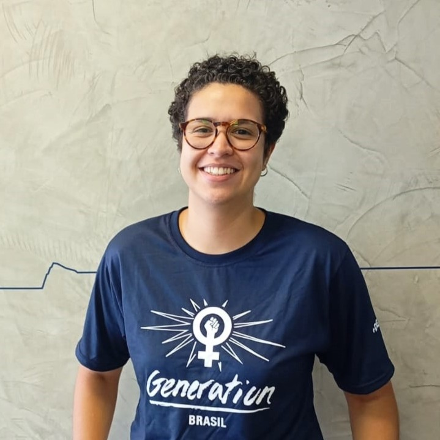

Antropóloga e mestranda em Ciências Sociais, com experiência em pesquisa social, mobilização e entrevistas. Atuei em diversos projetos realizando coleta de dados quantitativos e qualitativos, aplicação de surveys e elaboração de relatórios. Atualmente, estou em transição para a área de tecnologia, aprimorando minhas habilidades em desenvolvimento web full stack, com foco em Java, React, JavaScript e SQL, além de análise de dados com SQL e Python. Meu objetivo é integrar a tecnologia às minhas experiências em pesquisa e engajamento de públicos diversos. Participei de um bootcamp de desenvolvimento full stack, elaborando projetos que integraram front-end e back-end, aplicando conceitos fundamentais de programação. Possuo um perfil analítico e colaborativo, o que me permite identificar problemas rapidamente e propor soluções eficazes em equipe. Como futura desenvolvedora Java, trago habilidades em organização e liderança, assegurando a entrega de projetos consistentes e bem estruturados.
Sobre a Beatriz
